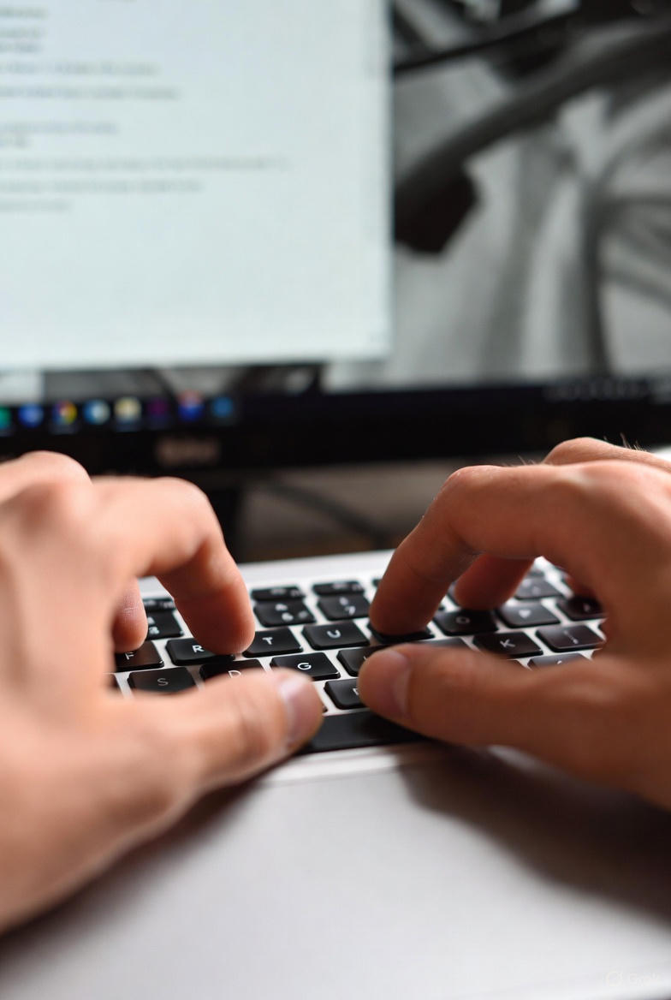

تصاویر

در این وبسایت، هنر تایپ دهانگشتی را به سادهترین و کاربردیترین روش به شما آموزش میدهیم. تایپ دهانگشتی تنها یک مهارت نیست؛ بلکه ابزاری است که سرعت، دقت و بهرهوری شما را بهطور چشمگیری افزایش میدهد.
از تمرینهای مرحلهبهمرحله و آموزشهای استاندارد ما استفاده کنید تا بدون نگاه کردن به صفحهکلید، روان و سریع بنویسید. با تمرین منظم، تایپ برای شما هم لذتبخش و هم کاربردی خواهد شد.
هدف اصلی از تایپ دهانگشتی، افزایش سرعت، دقت و راحتی در تایپ کردن است. این روش کمک میکند بدون نگاه کردن به صفحهکلید و فقط با کمک حافظهٔ عضلانی، متن را سریع و روان تایپ کنید.
با یادگیری تایپ دهانگشتی، زمان کمتری برای انجام کارهای نوشتاری صرف میکنید، خطاهای تایپی کاهش مییابد و تمرکز شما روی محتوا میماند. همچنین فشار و خستگی دستها کمتر شده و تایپ برای شما آسانتر و حرفهایتر میشود.
بهطور خلاصه، هدف تایپ دهانگشتی این است که تایپ کردن برای شما سریعتر، دقیقتر، کارآمدتر و بدون استرس باشد.